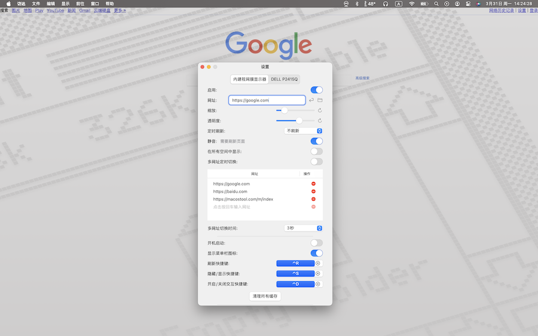

桌面网页

功能介绍
将一个网页设置成你的桌面壁纸
Set a web page as your desktop wallpaper

1.网页作为桌面背景，支持多显示器
1.Webpages as desktop backgrounds, with multi-monitor support
2.多网页定时切换，打造动态桌面体验
2.Scheduled multi-webpage switching for a dynamic desktop experience
3.定时刷新，确保内容实时更新
3.Timed refreshes to keep content current
4.缩放与透明度调节，让网页更适配桌面
4.Zoom and transparency adjustments for a perfect fit
5.快捷键控制 刷新、交互开关等，提高效率
5.Shortcuts for refresh and interaction control, boosting efficiency
6.网页静音，减少干扰
6.Mute webpages to minimize distractions
7.跨空间显示，确保网页在所有工作区可见
7.Cross-space display ensures visibility across all workspaces